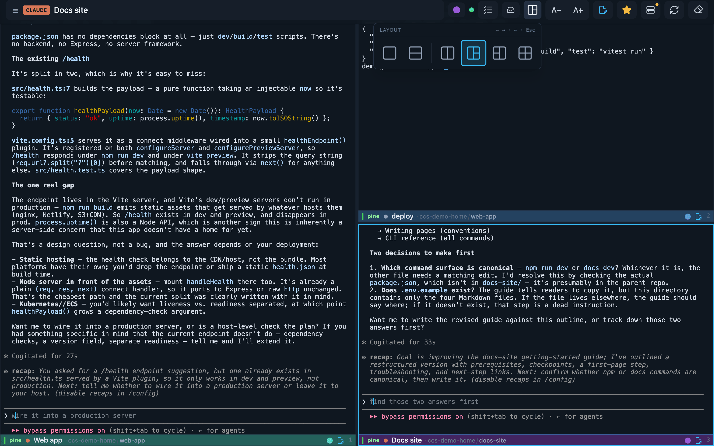
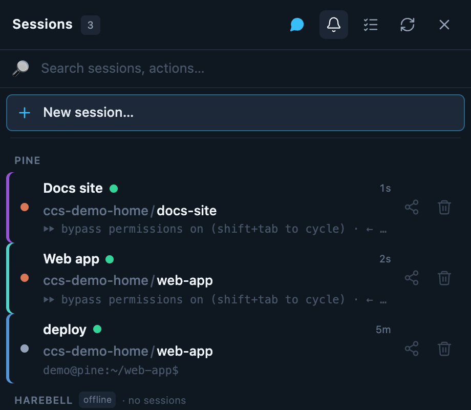
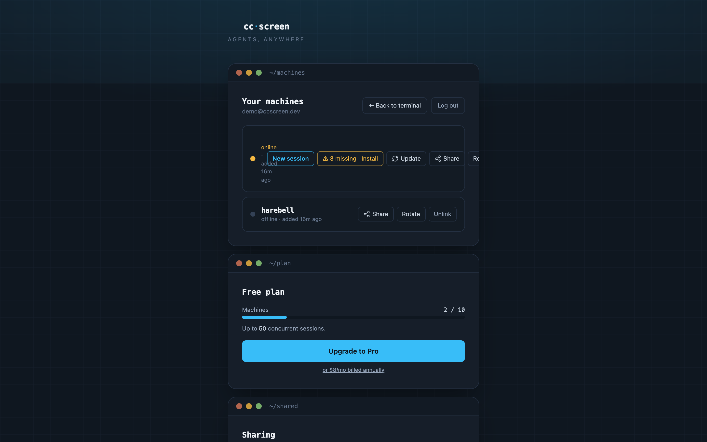

Using the web app
Everything at app.ccscreen.dev works in any browser, phone or desktop. On a phone, use Add to Home Screen — cc-screen is a PWA, so you get a real app icon, full-screen terminals, and push notifications.
Sessions and the switcher
The session drawer lists every session on every connected machine, grouped by machine, with a live preview line so you can tell at a glance who's working and who's waiting for you. Tap a session to attach; the terminal is the real PTY — what you see is exactly what's running on the box, and it keeps running when you close the tab.
Recent sits at the top of the list: up to ten of the sessions you were
last working in, most recent first, lifted out of their machine groups. It
answers "where was I two sessions ago?", so switching back and forth between
the two or three you're actively driving needs no reading — the order only
changes when you focus a session, never when an agent goes ready or starts
talking. The session you're currently in isn't listed (it's already on
screen), and when the drawer opens the cursor is already parked on the top
Recent row: on a laptop ⌃B ⏎ takes you back to the last session, and on a
phone it's the first row under your thumb.
This list lives in this browser — it isn't synced between devices, and
ccs on the same machine keeps its own (see the FAQ). Clearing
your browser storage clears it; nothing else is affected.
New session starts one: pick the machine, the tool (Claude, Codex, Gemini, Kimi, or a plain shell), and the working directory (with a directory search, so deep project paths are a few keystrokes). Two details worth knowing:

- Skip permissions (on by default) launches the CLI with its approval-bypass flag — the agent won't stop to ask before running tools. Turn it off for a session you want to supervise; sessions with it off wear a "safe" badge.
- Claude app (off by default) turns on Claude Code's own remote
control, registering the session with claude.ai/code and the Claude mobile
app under the name
claude-<session>. Leave it off and the session stays inside cc-screen — one remote-access layer per session, which is the point. Sessions with it on wear a "claude app" badge. The switch only appears for tools that have such a feature (today: Claude Code). - Sessions survive you. Closing the browser, losing signal, even the machine rebooting — the agent resumes its sessions and your panes re-attach.
Here's the whole flow in one take — new session, directory search, Claude booting:
The grid (desktop)
On a wide screen you can tile up to six sessions side by side, in six layout
templates (columns, rows, main-plus-stack, 2×2, and more). Panes can come
from different machines — one grid, your whole fleet. There's a layout
palette to switch arrangements (⌃B l), and each pane is a full live
terminal. The whole grid is drivable from the keyboard — see
Keyboard shortcuts for the pane chords.

Searching terminal output
Ctrl+B / opens a find bar over the focused pane: type to search that
session's scrollback, Enter / Shift+Enter for next / previous,
Esc to close and hand the keyboard back to the terminal. On a phone, the
magnifier button in the header does the same thing. In the file editor, the
agent column's magnifier searches the mirrored session.
Use this instead of the browser's own Find for terminal output: cc-screen
draws terminals on the GPU, so Cmd/Ctrl+F — which still works for the rest
of the page — can't see the characters. And a detail people notice: the
terminal cursor doesn't blink. That's deliberate; a blinking caret repaints
the page forever and costs real battery, and it was never part of what the
remote agent sends.
Copying text out of a session
Three ways, depending on who is doing the copying.
You select, you copy. Drag across terminal text and press ⌘C (Mac) or Ctrl+C (Linux/Windows). With no selection, Ctrl+C still goes through to the session as an interrupt — that never changed.
When a full-screen app has taken the terminal, a plain drag is a mouse
gesture that belongs to the app (Claude Code's full-screen renderer, htop,
lazygit and friends all ask for the mouse), so it selects nothing. Hold
⌥ Option on a Mac browser, Shift everywhere else, and drag — or click
Select text in the corner of the pane, which lets a plain drag select until
you turn it off. The pane tells you which modifier applies; it is the
browser's platform that decides, not the machine the session runs on.
The assistant copies. When something inside the session copies — Claude
Code's /copy, its copy-on-select, Ctrl+C on a selection inside its own UI,
/export → Clipboard — the text now lands on your clipboard, on the device
you're holding. It used to be thrown away, or (on a Mac agent) land on the
agent machine's clipboard while the assistant told you it had worked.
A few rules keep that from being a way for a session to write your clipboard whenever it likes:
- Only the session you are actively driving — focused pane, focused tab, and you've typed into it recently — gets a silent write. A session you are merely watching, including a teammate's, never writes your clipboard on its own; you get a Copy button instead, showing exactly what it would copy.
- Multi-line text, and anything that had control characters or direction-override characters removed, always takes the button, never the silent path.
- Very large copies (over 64 KB) are announced, not copied.
- A session that copies over and over is rate-limited and then switched off, with a notice you can re-enable.
- The reverse direction — a session reading your clipboard — is not implemented and won't be. That request is ignored, always.
Scrolling behaves the same way, split by who owns the screen: on a phone, a swipe scrolls the terminal's own scrollback normally, and scrolls the application's view when a full-screen app has taken over. On the desktop the mouse wheel does the same — the app's own view while it's running, the browser's scrollback outside it.
Keyboard shortcuts
On a laptop, cc-screen drives the whole grid from one prefix key: ⌃B
(Ctrl+B), then a second key. It's the tmux idea, and it's the only keyboard
namespace the app claims — Cmd/Ctrl+F and the rest of your browser's keys are
never taken. The prefix is desktop-only: it needs a real pointer and a
window at least 900 px wide, so on a phone (or a narrow window) there's one
pane and no chords. And it stays out of the way of typing: whenever the caret is
in a text field — the compose box, a search box, a rename field — ⌃B goes to
that field instead.
The prefix itself
⌃Barms the prefix. Press the second key within 600 ms.⌃Bheld for ~½ a second, with no second key, opens the session list.⌃BEsccancels an armed prefix.
Moving between panes
⌃B←/→move the focus between panes, wrapping around. After one, you get about 800 ms in which bare←/→keep stepping — so you can walk the grid without re-pressing the prefix.⌃B1–9jump straight to a pane. The number is the small digit in the corner of each pane, shown whether or not that pane holds a session.⌃B;goes back to the pane you came from, and pressing it again returns — for bouncing between the two sessions you're actually working in.⌃Bl(or⌃BSpace) opens the layout palette.⌃Bxclears the focused pane — the session keeps running.
The session in a pane
⌃B↑/↓change which session the focused pane shows. This is the one to keep straight: left/right moves between panes, up/down changes what's inside one. (On an empty pane the bare arrows belong to its session switcher, so there you press the prefix each time.)⌃Bsopens the session list.⌃Brrenames the focused session (same as double-clicking its name).⌃Bcre-rolls the focused session's colour mark;⌃B⇧Cclears it.⌃B⇧Sshares the focused session with a teammate — team accounts on ccscreen.dev only; elsewhere it does nothing.
Files and search
⌃B/finds text in the focused terminal (see above).⌃Beopens the file browser / editor for the focused session.⌃Bfopens it and jumps straight to find-a-file.⌃Btopens it and jumps to the tree filter.
Files: browse, edit, cowork
Every machine gets a built-in file browser and editor, confined to that machine's home directory. The tree is live (it follows filesystem changes as your agent works), and the editor previews markdown — handy for reading the plan or review docs agents produce.


- Uploads: drop files (up to 500 MiB) onto a machine from the browser.
- Clipboard images: paste an image (Ctrl-V) straight into a Claude or Codex session — it routes to the active session on whichever machine owns it. cc-screen stages the image on that machine and delivers it the way that CLI expects: Claude reads it as a local clipboard paste; Codex gets the staged file attached directly (the file is kept machine-locally until the session is deleted, so it survives drafts and resumes). No X11 or desktop environment is needed on the machine.
- Downloads: pull any file back out, PDFs render in-app.
Notifications
Enable notifications (the bell button) and your phone buzzes when an agent finishes its turn — the moment it stops working and waits for your input. One subscription covers every machine; the machine's name is in the title. On iOS this requires the PWA installed to the home screen.

Sharing
Share a whole machine (from its dashboard row) or a single session (from its menu) with another person, as can view or can use:
- If they already have an account, the share lands in their inbox (the bell icon) to accept or decline.
- If they don't, the invitation is what gets them in — the share attaches automatically when they sign up with that email.
- Either way they get the machine's files too — the tree, the editor, download and upload — even when you shared a single session. They can already ask the assistant in that terminal to print or change anything it can reach, so the file browser gives them nothing new; see Security before sharing.
Either way cc-screen emails the invitation, and either way you also get a copyable invite link. Keep that link handy: it's the same invitation, and it's the fallback for a spam folder, a typo'd address, or a self-hosted hub whose operator hasn't configured a mail relay (those send no mail at all).
You can see everything shared by you and with you on the dashboard's Sharing card, and revoke (or leave) any of it there. Access stops immediately on revoke.
Teams
One-off shares scale badly past two people — a team replaces them with one standing arrangement: everyone on the team automatically sees everyone else's machines and sessions, view-only. No per-machine invites, no grants to keep in sync when someone gets a new laptop.
Joining is the consent, and the invite says so before you accept, verbatim:
Joining makes your machines on cc-screen visible to this team (view-only). You can hide any machine in settings.
The fine print, in plain words:
- View, not use. Teammates can open your sessions and watch, but creating sessions on your machine — or any admin action on it — still requires an explicit "can use" share from you, exactly as before. (Honest caveat: an open terminal accepts keystrokes — view-only bounds what a teammate can reach, not what a focused terminal does. See the Security model.)
- Hide any machine. Every machine of yours has a Visible to team toggle in the team window — flip it off and that machine drops out of the team's view immediately. The toggle belongs to the machine's owner alone, whatever their role, and every flip is recorded in the team's audit log.
- Roles. One owner (billing, roles, everything), any number of admins (invite, remove members), and members. Ownership transfers explicitly — the owner leaves only after handing the team over.
- Pooled limits. A team shares one pool: 10 machines and 50 concurrent sessions per seat, counted across the whole team rather than per person. Every seat gets everything Pro has; "pooled" means a heavy teammate can use headroom a light one doesn't.
- Leaving cuts both ways. Leave (or be removed) and you stop seeing the team's machines and they stop seeing yours, instantly. Personal shares you set up separately survive.
The dashboard
The machines dashboard (your account page) is the admin surface:
- online/offline per machine, live.
- ⚠ N missing · Install — the machine lacks some coding assistants; installs them remotely, for that machine's user, no sudo.
- Update — update a machine's assistants, then restart their sessions.
- Share — invite someone to the machine.
- Rotate — mint a new machine credential (the old one stops working; shown once).
- Unlink — detach the machine from your account; it would need to re-enroll to come back.
- Add a machine — generates the install one-liner for macOS/Linux or Windows. See the Quickstart.

On a team, the dashboard grows a ~/team window — the team's admin
surface:
- the member list with each person's role; owners and admins invite by email (cc-screen mails the invitation and hands you a copyable link as well; each pending row shows how delivery went — sending, sent, failed with a Resend, or bad address) and remove members; the owner changes roles and can transfer ownership.
- your machines' Visible to team toggles (yours to flip, whatever your role).
- the seats meter on the plan card —
members / seats— and, for the owner or an admin, the seat checkout and the billing portal where seat counts change. - the audit log (owners and admins): who joined, who invited whom, every visibility flip, seat changes — the team's history, newest first.
If you hit your plan's machine or session limit, the app tells you which cap you hit and how to request more — see the FAQ on plans.